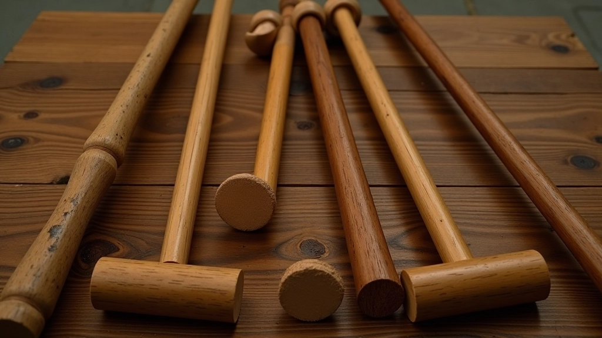
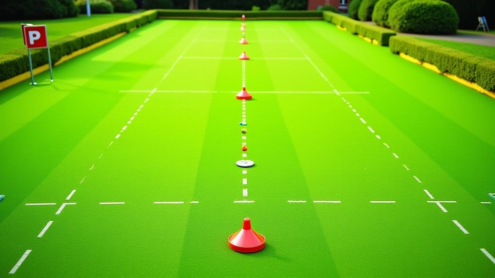

أساسيات ضربة الاقتراب من الطوق للمبتدئين
شرح تفصيلي للحركات الأساسية والموقف الصحيح والقوة المناسبة لتنفيذ ضربة فعالة من البداية.
برنامج تدريبي منظم يتضمن تمارين تدريجية وتحديات عملية لتحسين دقتك وثقتك في اللعب الفعلي. ستتعلم كيفية الانتقال من الحركات الأساسية إلى تقنيات متقدمة تمكّنك من إتقان ضربة الاقتراب من الطوق في مختلف الظروف الملعبية.


فريق التحرير والمراجعة
كتبها فريق تحرير استراتيجية الكروكيه، المتخصص في تقديم إرشادات عملية وسهلة المتابعة.
الفرق بين لاعب جيد ولاعب متقن حقيقي يكمن في كيفية التدريب. ليس الأمر عن القضاء ساعات طويلة على الملعب بلا هدف — بل عن اتباع خطة مدروسة تبني المهارات بشكل تدريجي. هنا نعرض لك برنامجاً يركز على الحركات الأساسية أولاً، ثم ينقلك تدريجياً نحو التقنيات المعقدة والتحديات الحقيقية.
سترى أن كل تمرين له هدف واضح. وكل تمرين يبني على السابق. هذا هو السر — لا توجد قفزات عشوائية، فقط تقدم ثابت نحو الإتقان.
كل مرحلة مصممة لبناء أساس قوي قبل الانتقال للتالية
أسبوعان من التركيز على الموقف الصحيح والقبضة والحركة الأساسية. ستتعلم كيف يتحرك جسدك في كل مرحلة من مراحل الضربة. بدون هذا الأساس القوي، المراحل التالية ستكون صعبة جداً.
الآن تتعلم حساب القوة المناسبة لكل مسافة مختلفة. أسبوعان من التمارين التدريجية — من ضربات قصيرة 2 متر إلى ضربات طويلة 10 أمتار. تعرّف على كيفية إحساس الكرة والتحكم بها.
ثلاثة أسابيع تتعلم فيها كيفية حساب الزوايا والمسافات بسرعة. تعرّف على تأثير سطح الملعب المختلف على حركة الكرة. هنا تبدأ ترى الملعب بعيون خبير.
شهر كامل من التدريبات المحاكاة للعب الحقيقي. ستواجه ضغطاً متزايداً وتحديات عملية تشبه المباريات الفعلية. هنا تثبت أن مهاراتك تعمل تحت الضغط.
البرنامج يركز على ثلاث تقنيات أساسية. كل واحدة لها استخدامات محددة على الملعب.
الضربة الأساسية التي تستخدمها معظم الوقت. تتعلم كيفية إطلاقها بدقة وتناسق من مسافات مختلفة — من 1 متر إلى 15 متر. هذه التقنية تتطلب توازن جسدي مثالي وتركيز على نقطة التلامس مع الكرة.
تستخدمها عندما تكون الطوق في زاوية عن موقعك. تتطلب تعديل الموقف وحساب الزاوية بدقة. نتعلمك كيفية رؤية الخط المثالي واتباعه بثقة، حتى لو كانت الزاوية حادة.
عندما تحتاج إلى قوة أكثر لكن بدون فقدان الدقة. هذه التقنية تفصل بين اللاعبين العاديين والمحترفين. تتطلب ممارسة كثيفة لفهم كيف تؤثر السرعة على المسار النهائي للكرة.

هذا البرنامج مصمم كدليل تعليمي شامل لتحسين تقنيتك في ضربة الاقتراب من الطوق. كل فرد يتعلم بسرعة مختلفة — قد تحتاج أنت لوقت أطول أو أقصر من المدة المقترحة. الأهم هو عدم التسرع والتركيز على الجودة قبل السرعة. إذا كنت تشعر بألم أو إجهاد أثناء التدريب، توقف واستشر مدرباً متخصصاً قبل المتابعة.
التدريب الفعال لا يعني التدريب كل يوم — بل التدريب بذكاء. هنا جدول مقترح يوازن بين الممارسة المكثفة والراحة الضرورية لاستعادة العضلات.
الأيام الثلاثة الأساسية: الاثنين والأربعاء والجمعة. جلسة 90 دقيقة في كل يوم — 20 دقيقة إحماء، 60 دقيقة تمارين مركزة، 10 دقائق تبريد.
اليوم الإضافي: السبت جلسة تدريب إضافية 60 دقيقة أخف شدة — تركيز على المرونة والتحليل الذاتي.
أيام الراحة: الثلاثاء والخميس والأحد. تحرك خفيف فقط — مشي أو استرخاء. هذه الأيام ضرورية لاستعادة الجسد والعقل.

تابع رحلتك التعليمية مع هذه الموارد الإضافية
شرح تفصيلي للحركات الأساسية والموقف الصحيح والقوة المناسبة لتنفيذ ضربة فعالة من البداية.

كيفية حساب القوة المطلوبة لكل مسافة مختلفة، والأخطاء الشائعة التي يرتكبها اللاعبون.

تقنيات عملية لتقدير المسافات وحساب الزوايا الصحيحة قبل تنفيذ الضربة بدقة عالية.
البرنامج الذي شرحناه هنا ليس مجرد قائمة تمارين — إنه خريطة طريق شاملة نحو الإتقان. ستلاحظ تحسناً حقيقياً بعد أسابيع قليلة من الالتزام. الأهم هو البقاء منظماً والاستماع لجسدك وعدم التسرع.
ابدأ من المرحلة الأولى حتى لو شعرت أنك متقدم. الأساسيات المتينة هي ما يفصل بين اللاعبين الجيدين والمحترفين. بعد 12 أسبوعاً من التدريب المنتظم، ستشعر بفرق حقيقي — في ثقتك، في دقتك، وفي قدرتك على التعامل مع أي موقف على الملعب.